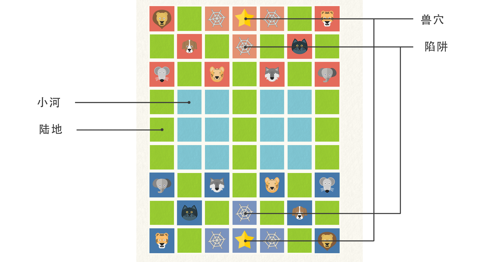
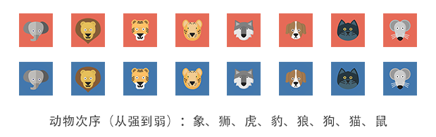
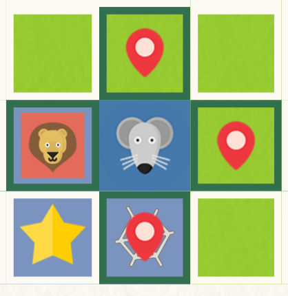
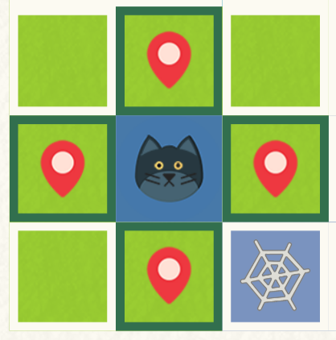
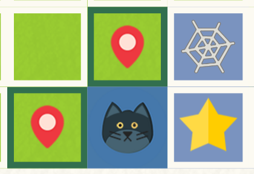
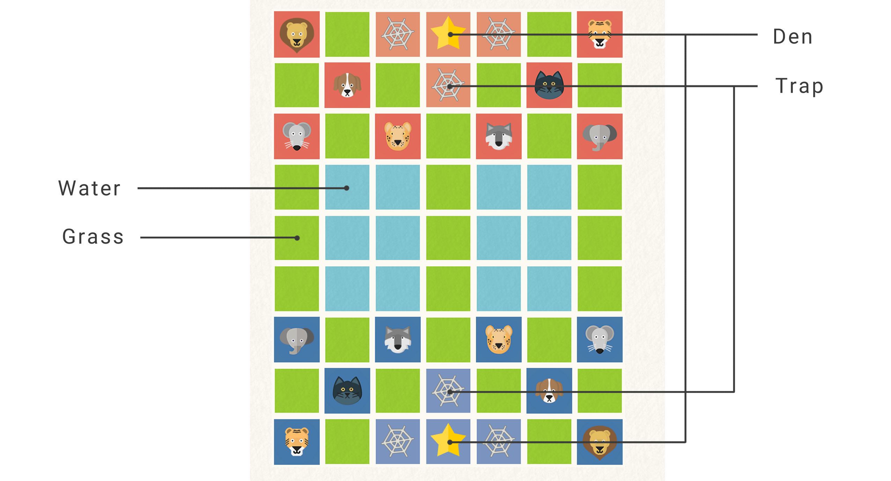
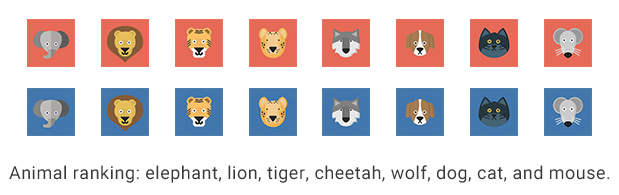

己方任一棋子走进对方兽穴或吃光对方所有棋子者胜。
下图是斗兽棋开局棋面，已标出各棋子起始位置、陆地、小河、兽穴、陷阱。
双方的八只棋子由强至弱为：象、狮、虎、豹、狼、狗、猫、鼠。棋子可以吃掉同级或较弱的棋子。例外：鼠可以吃掉象，但象却不可以吃掉鼠。
若棋子走进敌方的陷阱，对方任一棋子都可将之吃掉，但己方棋子不能吃对方任一棋子。此特殊情况可理解为己方棋子丧失战斗力变成最弱。如己方狮走进敌方的陷阱，对方鼠都可将之吃掉。
蓝方先手，轮流下一子。棋子可以纵横向移动一格，但不可移动到自己的兽穴。
对于小河，棋子移动有以下特殊规则。
The goal of the game is either to move a piece onto a special square, the den, on the opponent's side of the board or capture all of the opponent's pieces.
The following picture is a typical Jungle gameboard showing the location of starting squares, grass, water, the dens, and traps.
Each side has eight pieces representing different animals, each with a different rank. Higher ranking pieces can capture all pieces of identical or weaker ranking. However, there is one exception: the mouse can capture the elephant, while the elephant can not capture the mouse.
Players alternate moves with Blue moving first. During their turn, a player must move. Each piece moves one square horizontally or vertically (not diagonally). A piece may not move to its own den.
There are special rules related to the water squares:
Animals capture the opponent pieces by "eating" them. A piece can capture any enemy piece which has the same or lower rank, with the following two exceptions: the mouse may capture the elephant; the player may capture any enemy piece in one of the player's trap squares regardless of rank.